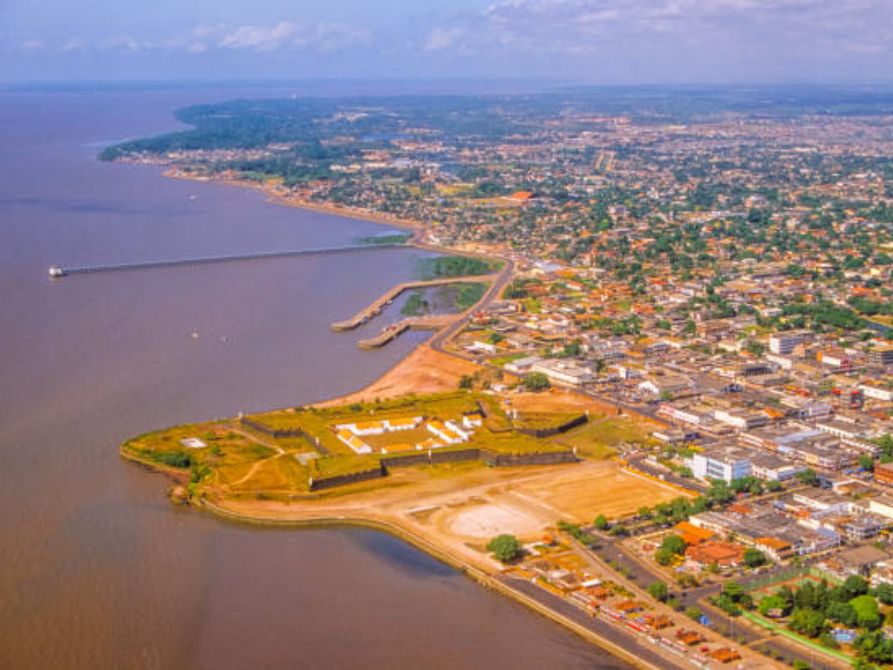

O Amapá é um estado da Região Norte do Brasil, localizado na Amazônia, com capital em Macapá e fronteira com a Guiana Francesa e o estado do Pará. É conhecido por sua grande cobertura de floresta amazônica preservada e por ser atravessado pela Linha do Equador, onde fica o Marco Zero do Equador. A economia é baseada principalmente na mineração, pesca, comércio, extrativismo e serviços públicos. A população é relativamente pequena e concentrada em Macapá. A cultura local mistura influências indígenas, africanas e amazônicas, com destaque para o marabaixo. O estado também ganhou atenção nacional pelo Apagão do Amapá de 2020. O Amapá é considerado um dos estados mais preservados ambientalmente do Brasil e tem grande importância para a conservação da Amazônia.

Voltar